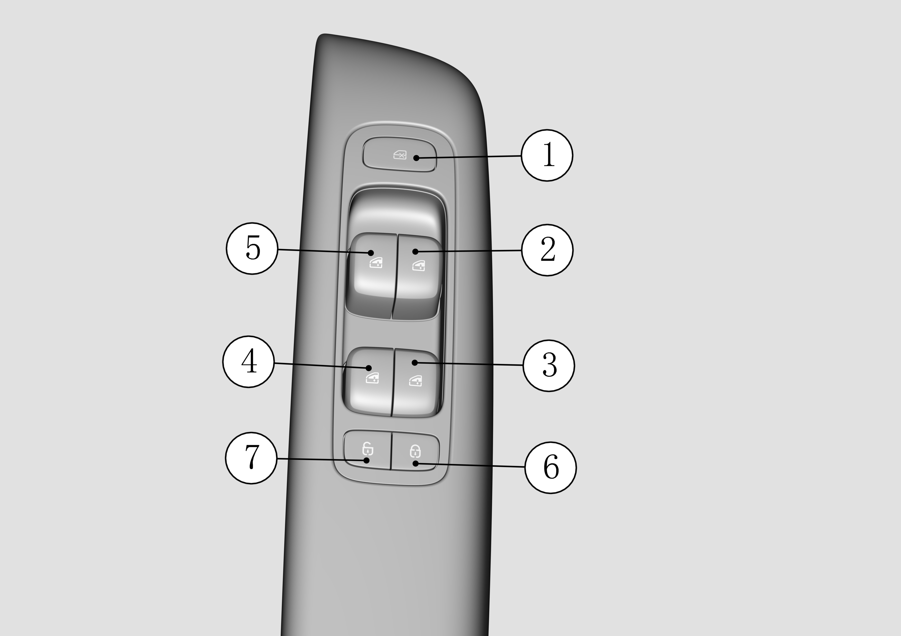
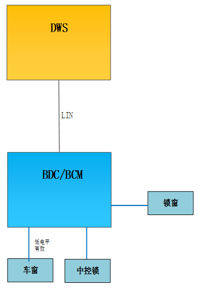

На внутренней панели двери водителя расположены кнопки стеклоподъемников всех дверей автомобиля, а кнопки на других дверях управляют соответствующими окнами. Кнопка переключателя стеклоподъемника имеет пять положений, по умолчанию удерживается в среднем положении, переключение вверх на одно положение соответствует ручному подъему, на два положения — автоматическому подъему, переключение вниз на одно положение соответствует ручному опусканию, на два положения — автоматическому опусканию. Кнопки № ⑤, ②, ④, ③ на рисунке ниже соответствуют стеклу водителя, переднего пассажира, левого заднего и правого заднего пассажиров соответственно; кнопка № ⑥/⑦ — это кнопка центрального замка, управляющая запиранием/отпиранием четырех дверей; кнопка № ① — это кнопка блокировки стекол, после ее блокировки, за исключением переключателя со стороны водителя, способного управлять стеклами четырех дверей, переключатели стеклоподъемников остальных дверей блокируются для использования.

Определение контактов контроллеров системы управления стеклами:
|
№ |
Контроллер |
Обзор |
|
1 |
BCM/BDC |
1. Прием команд управления, выполнение отпирания/запирания центрального замка, подъема и опускания стекол, блокировки от детей; 2. В зависимости от выполнения передача обратного состояния выполнения отпирания/запирания и запрос переключателя стеклоподъемников на включение индикатора центрального замка, запрос выполнения блокировки стекол на включение переключателя стеклоподъемников для индикации блокировки стекол; 3. BDC на основе предварительных условий отправляет яркость фоновой подсветки на модуль переключателя стеклоподъемников для включения фоновой подсветки |
|
2 |
DWS |
1. В зависимости от состояния кнопок отправка сигналов центрального замка, подъема и опускания стекол, блокировки стекол на BDC; 2. В зависимости от состояния выполнения BDC отправка запроса на включение индикатора, DWS включает соответствующий индикатор |
Структурная схема:
